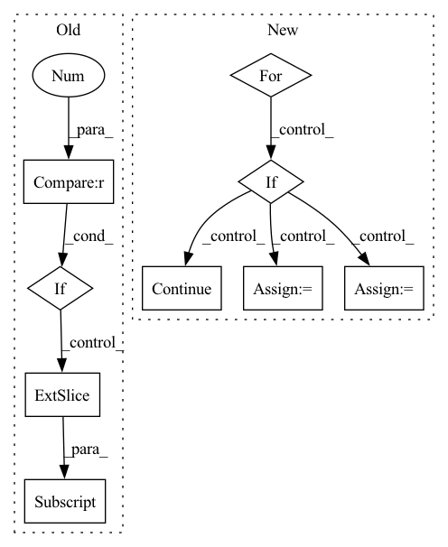

Pattern ID :17303

Before Change
def shampoo(ctx: Context, grad: jnp.ndarray, step: jnp.ndarray) -> jnp.ndarray:
last_size = grad.shape[-1]
kernel_sizes = (ctx.dims.pointwise_kernel, ctx.dims.outer_bottleneck_kernel, ctx.dims.inner_bottleneck_kernel)
if grad.ndim != 3 or last_size not in kernel_sizes:
return _shampoo(ctx, grad, step)
return jnp.stack([_shampoo(ctx, grad[:, :, i], step) for i in range(last_size)], axis=-1)
def clip_norm(val: jnp.ndarray, min_norm: float) -> jnp.ndarray:
After Change
preconditioner = Preconditioner(grad, ctx.optimizer.block_size)
new_preconditioners = []
for i, old_stat in enumerate(preconditioner.statistics_from_grad(grad)):
new_stat = ema(ctx, old_stat, step, 1 - ctx.optimizer.shampoo_beta2, f"statistics_{i}", True,
jnp.eye(old_stat.shape[0], dtype=ctx.model.storage_dtype) * ctx.optimizer.epsilon)
prev_p = get_param(ctx, f"preconditioner_{i}", old_stat.shape, dtype=ctx.model.storage_dtype,
init_val=jnp.eye(old_stat.shape[0], dtype=ctx.model.storage_dtype))
if ctx.is_initializing:
continue
new_p, error = matrix_inverse_pth_root(new_stat, preconditioner.exponent_for_preconditioner(),
ridge_epsilon=ctx.optimizer.epsilon)
new_p = select_preconditioner(error, new_p, prev_p)
new_preconditioners.append(new_p)
assign(ctx, f"preconditioner_{i}", new_p)
if ctx.is_initializing:
In pattern: SUPERPATTERN
Frequency: 3
Non-data size: 9
Instances
Fragment ID: 57500405
Project Name: homebrewnlp/homebrewnlp-jax
Commit Name: bf951740b4e76e5a2144d26015890e30aed83bb5
Time: 2022-07-06
Author: 39779310+ClashLuke@users.noreply.github.com
File Name: src/optimizer.py
M Class Name: AnonimousClass
N Class Name: AnonimousClass
M Method Name: shampoo(3)
N Method Name: shampoo(3)
M Parent Class:
N Parent Class:
M File Name: src/optimizer.py
N File Name: src/optimizer.py
M Start Line: 93
M End Line: 97
N Start Line: 70
N End Line: 89
'>
Before Change
reid_preds = outputs[:, :, self.num_classes+5:]
// calculate targets
mixup = targets.shape[2] > 5
if mixup:
label_cut = targets[..., :5]
else:
label_cut = targets
nlabel = (label_cut.sum(dim=2) > 0).sum(dim=1) // number of objects
After Change
if self.reid_dim > 0:
reid_feat = reid_preds.view(-1, self.reid_dim)[fg_masks]
cls_label_targets = cls_targets.max(1)[1]
for cls in range(self.num_classes):
inds = torch.where(cls == cls_label_targets)
if inds[0].shape[0] == 0:
continue
this_cls_tracking_id = reid_targets[inds]
this_cls_reid_feat = self.emb_scales[cls] * F.normalize(reid_feat[inds])
reid_output = self.classifiers[cls](this_cls_reid_feat)
reid_loss += self.reid_loss(reid_output, this_cls_tracking_id)
reg_weight = 5.0
'>
Fragment ID: 57500404
Project Name: zhangming8/yolox-pytorch
Commit Name: e162fc0465b1f5d8b3211cdc81fd8eabb6dd55c7
Time: 2021-07-26
Author: zhangming8@github.com
File Name: models/losses/yolox_loss.py
M Class Name: YOLOXLoss
N Class Name: YOLOXLoss
M Method Name: get_losses(9)
N Method Name: get_losses(9)
M Parent Class: nn.Module
N Parent Class: nn.Module
M File Name: models/losses/yolox_loss.py
N File Name: models/losses/yolox_loss.py
M Start Line: 94
M End Line: 206
N Start Line: 105
N End Line: 224
'>
Before Change
def shampoo(ctx: Context, grad: jnp.ndarray, step: jnp.ndarray) -> jnp.ndarray:
last_size = grad.shape[-1]
kernel_sizes = (ctx.dims.pointwise_kernel, ctx.dims.outer_bottleneck_kernel, ctx.dims.inner_bottleneck_kernel)
if grad.ndim != 3 or last_size not in kernel_sizes:
return _shampoo(ctx, grad, step)
return jnp.stack([_shampoo(ctx, grad[:, :, i], step) for i in range(last_size)], axis=-1)
def clip_norm(val: jnp.ndarray, min_norm: float) -> jnp.ndarray:
After Change
preconditioner = Preconditioner(grad, ctx.optimizer.block_size)
new_preconditioners = []
for i, old_stat in enumerate(preconditioner.statistics_from_grad(grad)):
new_stat = ema(ctx, old_stat, step, 1 - ctx.optimizer.shampoo_beta2, f"statistics_{i}", True,
jnp.eye(old_stat.shape[0], dtype=ctx.model.storage_dtype) * ctx.optimizer.epsilon)
prev_p = get_param(ctx, f"preconditioner_{i}", old_stat.shape, dtype=ctx.model.storage_dtype,
init_val=jnp.eye(old_stat.shape[0], dtype=ctx.model.storage_dtype))
if ctx.is_initializing:
continue
new_p, error = matrix_inverse_pth_root(new_stat, preconditioner.exponent_for_preconditioner(),
ridge_epsilon=ctx.optimizer.epsilon)
new_p = select_preconditioner(error, new_p, prev_p)
new_preconditioners.append(new_p)
assign(ctx, f"preconditioner_{i}", new_p)
if ctx.is_initializing:
'>
Fragment ID: 57500406
Project Name: homebrewnlp/homebrewnlp-jax
Commit Name: bf951740b4e76e5a2144d26015890e30aed83bb5
Time: 2022-07-06
Author: 39779310+ClashLuke@users.noreply.github.com
File Name: src/optimizer.py
M Class Name: AnonimousClass
N Class Name: AnonimousClass
M Method Name: shampoo(3)
N Method Name: shampoo(3)
M Parent Class:
N Parent Class:
M File Name: src/optimizer.py
N File Name: src/optimizer.py
M Start Line: 93
M End Line: 97
N Start Line: 70
N End Line: 89